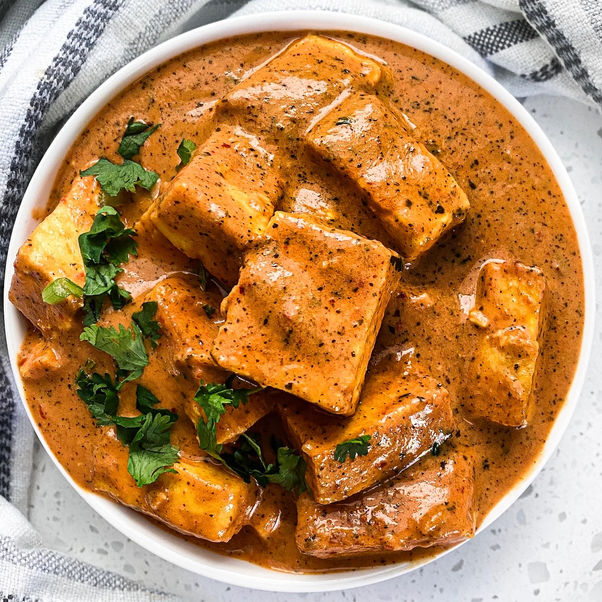

Paneer Butter Masala is a popular North Indian dish featuring soft, succulent cubes of paneer simmered in a rich, creamy tomato-based gravy. The sauce is prepared with butter, aromatic Indian spices, cashews, and fresh cream, creating a delicious balance of sweetness, mild heat, and savory flavors. The smooth, velvety gravy perfectly coats the paneer, making every bite flavorful and satisfying. This restaurant-style vegetarian curry pairs wonderfully with butter naan, garlic naan, roti, or fragrant basmati rice. It is an excellent choice for family dinners, celebrations, or whenever you crave a comforting Indian meal.
Cut the paneer into medium-sized cubes. Chop the tomatoes and onion, mince the ginger-garlic paste if preparing it fresh, and measure all the spices. Keep the cream and kasuri methi ready for the final stage.
Heat one tablespoon of oil and a little butter in a pan over medium heat. Add the optional whole spices and allow them to release their aroma.
Add the chopped onion and cook until softened. Stir in the ginger-garlic paste and cook briefly. Add the chopped tomatoes, cashews, green chilies, Kashmiri chili powder, and a little salt.
Pour in a small amount of water, cover the pan, and cook for approximately 12-15 minutes, or until the tomatoes are soft and the cashews are tender.
Turn off the heat and allow the mixture to cool slightly. Remove the whole spices if desired, then transfer the mixture to a blender. Blend until completely smooth. Add a little water if needed to help it blend.
Be careful when blending hot ingredients. Allow steam to escape safely according to your blender's instructions.
Heat the remaining butter in the pan. Pour in the blended tomato-cashew puree and stir well. Add turmeric powder, coriander powder, cumin powder, garam masala, and sugar.
Cook over medium-low heat for approximately 8-10 minutes, stirring occasionally. Add water gradually until the gravy reaches a smooth, creamy consistency.
Heat a little butter or oil in a separate pan. Add the paneer cubes and lightly sauté them for 1-2 minutes, turning gently so they do not break.
Avoid frying the paneer for too long, as it can become firm and rubbery. You can also skip this step and add fresh paneer directly to the gravy.
Gently add the paneer cubes to the prepared gravy. Stir carefully to coat the paneer evenly without breaking the pieces.
Allow the curry to simmer gently for 3-5 minutes so the paneer absorbs the flavors of the sauce.
Lower the heat and stir in the fresh cream. Crush the kasuri methi between your palms and sprinkle it into the curry. Mix gently and taste the gravy, adjusting the salt and seasoning if necessary.
Avoid boiling the curry vigorously after adding cream. A gentle simmer helps maintain its smooth texture.
Turn off the heat and garnish with chopped coriander leaves, a small knob of butter, and a drizzle of fresh cream. Serve immediately while warm.
Paneer Butter Masala tastes delicious with butter naan, garlic naan, tandoori roti, or soft chapati. It also pairs wonderfully with steamed basmati rice or jeera rice. Serve it with sliced onions, lemon wedges, and a fresh salad for a complete meal. A little extra cream and freshly chopped coriander make the dish look especially appetizing.
Paneer Butter Masala brings together soft paneer, aromatic spices, and a rich, creamy tomato gravy to create a comforting North Indian favorite. Its balanced flavors and velvety texture make it suitable for everyday meals as well as special occasions. Serve it fresh with your favorite Indian bread or rice and enjoy every delicious bite!